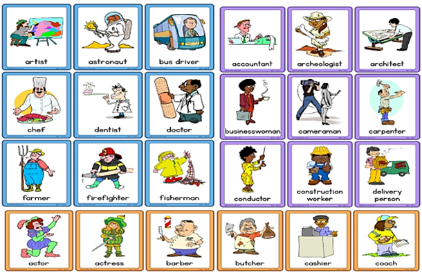

THE OCCUPATIONS OR JOBS
OBJETIVO: Aprender las ocupaciones o trabajos en inglés y relacionarlas con los miembros de su propia familia.
Occupations: Se dará a conocer vocabulario relacionado con las ocupaciones, profesiones o trabajos
Las profesiones u ocupaciones ayudan a los chicos a darse cuenta de que cada oficio en la sociedad es importante, ayuda también a mejorar el aprendizaje, desarrollar la imaginación acerca de lo que les gustaría ser cuando sean grandes.

En esta oportunidad vas a observar y escuchar dos videos de canciones con varias ocupaciones o trabajos. Es necesario aprender las ocupaciones en inglés y español para que tu vocabulario se expanda y logres comunicarte con mayor facilidad en el idioma. Hay que recordar también que la mejor manera de memorizar la información es practicando, y que mejor que a través de canciones.
Canta con tu familia, realiza un video de una de las dos canciones y envíala al WhatsApp para revisarlo. Espero te diviertas con esta actividad